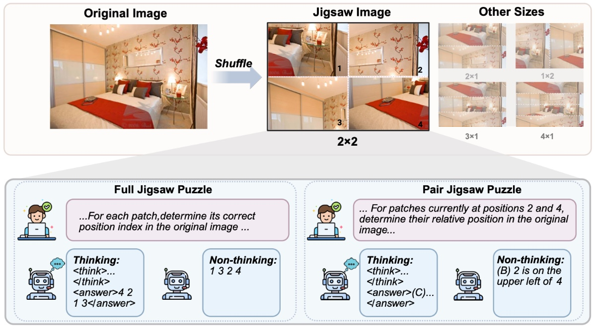

Jigsaw-R1: A Study of Rule-based Visual Reinforcement Learning with Jigsaw Puzzles
TMLR 2025* = Co-first authorsTransactions on Machine Learning Research

In brief
A DeepSeek-R1-style study of rule-based reinforcement learning for multimodal LLMs, using jigsaw puzzles as a fully label-free training signal: shuffling any image collection generates its own verifiable ground truth, with difficulty adjustable by grid size. RL-tuned models go from near-random guessing to near-perfect accuracy (e.g. Qwen2.5-VL-7B: 49.4% to 98.9% on 2x1 pair puzzles), generalize to puzzle sizes never seen in training, and transfer to real perception benchmarks — all without a single human annotation.
Key takeaways
- Jigsaw puzzles are a label-free RL signal: rewards are generated by rule from any image collection, with no human annotation — which even makes label-free training on the test set legitimate, pointing toward test-time training applications.
- Before fine-tuning, even GPT-4.1 and Qwen2.5-VL-72B perform near random guessing on the simplest 2x1 puzzles; after rule-based RL, small open models reach 97-99% and generalize to unseen, larger configurations.
- Puzzle training transfers to downstream perception tasks: Qwen2.5-VL-7B (thinking) gains +6.4 points on average across CV-Bench, MMVP, SAT and Super-CLEVR, and GUI grounding on ScreenSpot jumps from 57.4 to 72.5 — despite training only on COCO puzzles.
- No "aha moment": verification, backtracking, subgoal setting and backward chaining all pre-exist in MLLMs before training; their frequency grows steadily with training and task difficulty rather than emerging suddenly.
- A reasoning-faithfulness caveat: open-source MLLMs favor direct answering, and even when trained to think step by step, their (correct) final answers grow increasingly inconsistent with the stated reasoning chain.
- RL generalizes better than SFT, and an SFT cold-start phase before RL can make the subsequent RL optimization less effective.
Abstract
The application of rule-based reinforcement learning (RL) to multimodal large language models (MLLMs) introduces unique challenges and potential deviations from findings in text-only domains, particularly for perception-heavy tasks. This paper provides a comprehensive study of rule-based visual RL, using jigsaw puzzles as a structured experimental framework. Jigsaw puzzles offer inherent ground truth, adjustable difficulty, and demand complex decision-making, making them ideal for this study. Our research reveals several key findings: Firstly, we find that MLLMs, initially performing near to random guessing on the simplest jigsaw puzzles, achieve near-perfect accuracy and generalize to complex, unseen configurations through fine-tuning. Secondly, training on jigsaw puzzles can induce generalization to other visual tasks, with effectiveness tied to specific task configurations. Thirdly, MLLMs can learn and generalize with or without explicit reasoning, though open-source models often favor direct answering. Consequently, even when trained for step-by-step reasoning, they can ignore the thinking process in deriving the final answer. Fourthly, we observe that complex reasoning patterns appear to be pre-existing rather than emergent, with their frequency increasing alongside training and task difficulty. Finally, our results demonstrate that RL exhibits more effective generalization than Supervised Fine-Tuning (SFT), and an initial SFT cold start phase can hinder subsequent RL optimization. Although these observations are based on jigsaw puzzles and may vary across other visual tasks, this research contributes a valuable piece of jigsaw to the larger puzzle of collective understanding rule-based visual RL and its potential in multimodal learning.
BibTeX
@article{zhu_jigsaw,
title = {{Jigsaw-R1}: A Study of Rule-based Visual Reinforcement Learning with Jigsaw Puzzles},
author = {Wang, Zifu and Zhu, Junyi and Tang, Bo and Li, Zhiyu and Xiong, Feiyu and Yu, Jiaqian and Blaschko, Matthew B.},
year = {2025},
journal = {Transactions on Machine Learning Research},
url = {https://arxiv.org/abs/2505.23590},
}